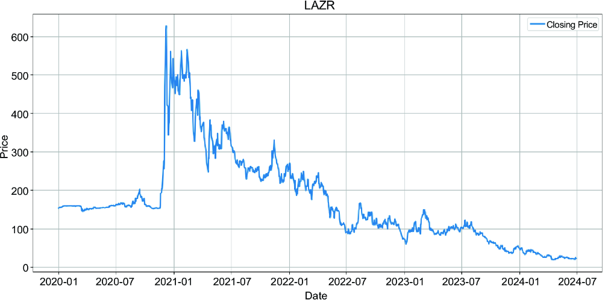
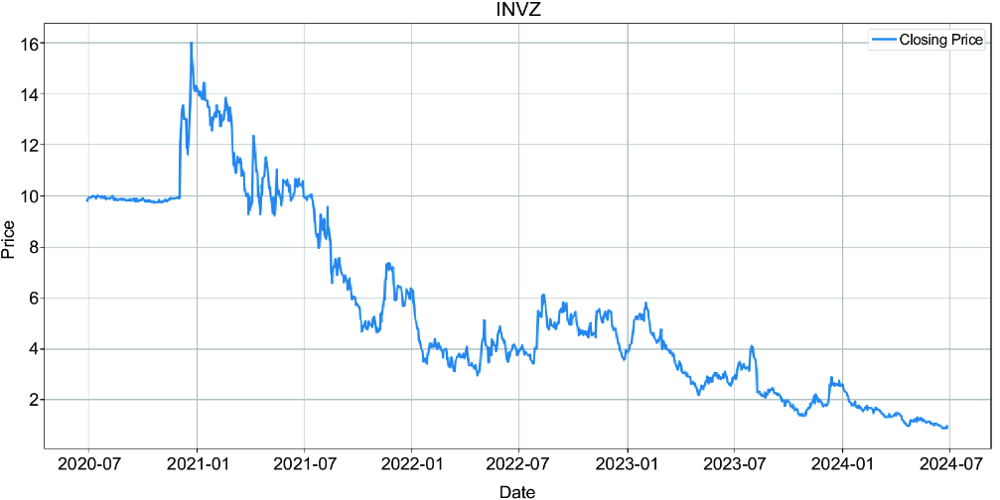
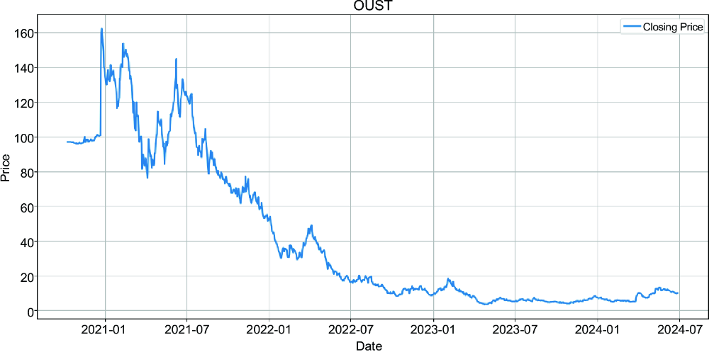
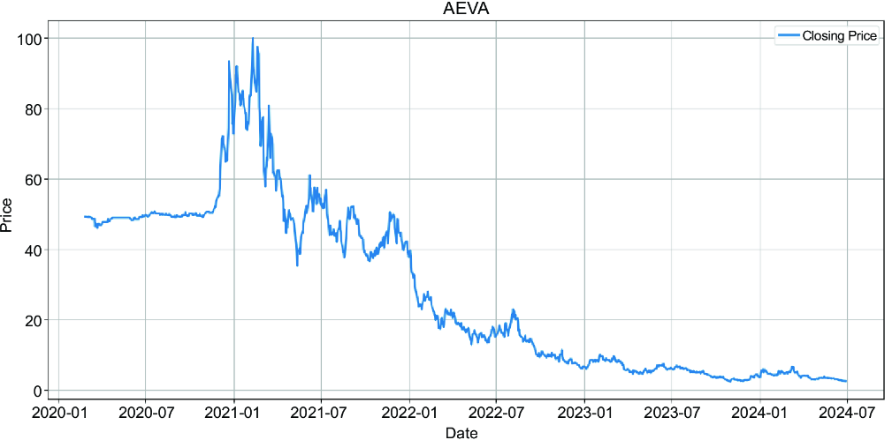
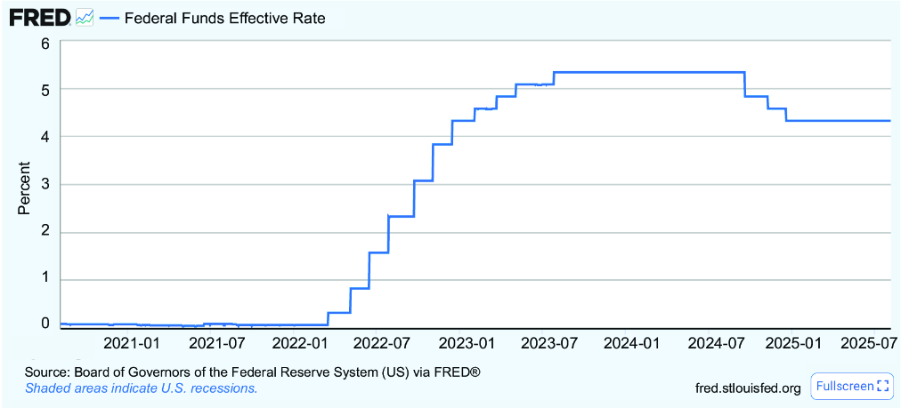
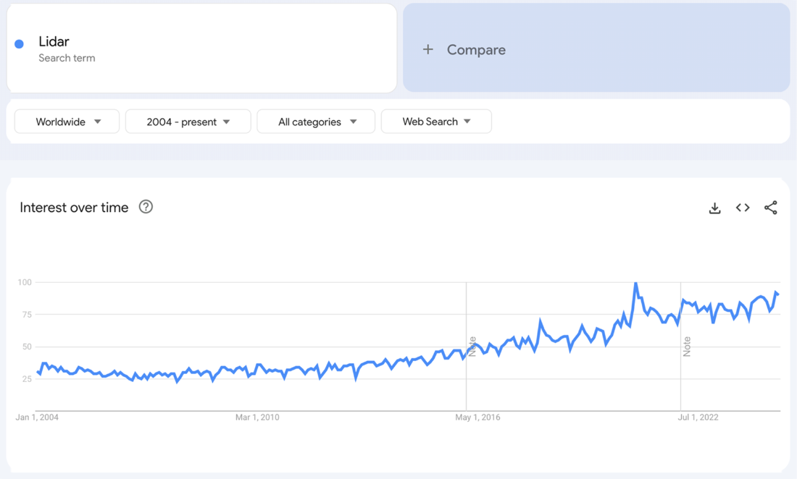
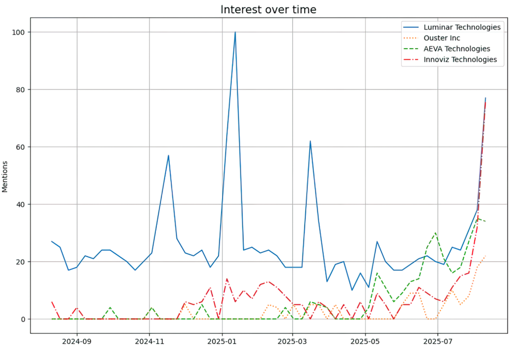

This chapter explores the process of building an asset portfolio designed to outperform the market. Finding these winners, or alphas as they are often called, is the holy grail of investing. A stock picker who consistently is just slightly more right than wrong may have already gained the Midas touch.
Many investors distinguish between gambling and investing when making decisions about trading assets. We’re excited about potential investment ideas that could make us wealthy. And as these dreams of joining the Warren Buffett club are overly pleasant, we tend to downplay doubts that threaten to undermine this endearing feeling of getting rich soon. Gambling begins when we rely more on feelings than on critical thinking when making investment decisions. With only a little research, we find suitable candidates for investments. The tricky part is conducting the required deep research to identify those candidates for an investment that truly yields a return.
I first learned how important a well-considered strategy can be at the age of 10 in chess club. As I had started playing chess earlier than my peers, I was more skilled at seeing combinations, such as forks, to capture my opponents’ pieces, which allowed me to win most of my games. My chess teacher saw me moving around and waiting for my opponent to make a mistake. He took me aside and told me: “If you just rely on someone else to make a mistake to win, you’ll lose against better players. You need a strategy to win a game. Even a bad plan is better than no plan.” He turned out to be right. Better players with a strategy roasted me on the chessboard. I quickly learned an indispensable principle of learning that can also be applied in investing: research, plan, execute, reflect, and adjust. With that strategy, learning from mistakes and coming out stronger is a necessary part of achieving long-term success. Let’s explore how we can invest with a plan. We begin with a case study for a specific domain, and then we extract the lessons learned from that case study to create a generic approach to researching investments.
An investment thesis is a researched theory about a stock’s predicted performance. We face many possible scenarios. Some share prices have performed poorly, and we consider them undervalued, betting on a turnaround. Other stocks may provide a solid income through steadily growing dividends, and we believe this trend will continue. And, of course, we might also bet against companies and short-sell assets that we consider overvalued. In this chapter, we aim to showcase one of these many possible scenarios, focusing on companies poised for growth and expansion.
Creators of an investment thesis must be able to defend their reasoning and allow, or even better, invite others to challenge their ideas. The more unbiased experts who peer-review the thesis, the better. Let’s start this investigation with the idea that we’ll refine until we identify a group of assets to purchase. One essential aspect of buying assets is defining goals to understand from the start and having a guideline for holding or selling the asset in the future.
Note The chapter’s focus is to outline a process for finding stocks, not to promote a specific set of stocks for you to purchase. You may continue to conduct your own extended research based on insights from this chapter. What remains crucial is that you only invest in businesses you understand.
Chapter 2, section 2.2, covering industry classification, outlines how businesses can vary significantly from one another. Different business models pose different challenges, and if you don’t know what can go wrong in a specific domain, you risk a lot by investing in it.
The Dunning-Kruger effect is a cognitive bias where people with low ability in a specific area tend to overestimate their competence, while those with high ability tend to underestimate theirs. When we encounter individuals who are new to a field we’ve already mastered, the consequences of that bias often become apparent to us. We often see the extent of misery when inexperienced persons take bold actions, and we frequently can predict where they fail and when. But how can we guarantee that we’re not victims of the Dunning-Kruger effect ourselves when we pick companies to invest in? The brutal answer is that we can never be 100% sure if we’re too confident. Undetected overconfidence is likely one of the primary root causes why so many people fail in their investment journey.
Still, we can reduce the chances of being overconfident by picking a field where there is evidence that we understand one thing or two, such as through a track record of work experience. That’s why I picked an industry I’ve worked in for a while.
Evolving an idea into a thesis is accomplished through iterative steps. We must gradually refine our thoughts and challenge them until we arrive at a refined concept. The path to a good thesis can be rocky. We sometimes must accept that we’re on the wrong path and need to start over. This process is similar to designing a product for a start-up: occasionally, you need to pivot, but eventually, you learn what the market needs. One advantage of an investor over a founder is that an investor doesn’t have to bring all the entrepreneurial skills to the table to launch products or services.
When it becomes clear that we can defend our theory about a profitable business through reasoning and receive feedback, we’re on to something. We can start calling our idea a thesis.
Conducting a strengths, weaknesses, opportunities, and threats (SWOT) analysis of this investment idea enables a more in-depth examination, leading to a more detailed exploration. We can use large language models (LLMs) to learn about them or engage in discussions with domain experts within our network. Many experts raise ethical questions about self-driving cars. Suppose an autonomous vehicle can’t prevent an accident. An algorithm must decide whether to drive into a meadow, where it will hit a person standing there, or hit a wall that will hurt the person in the car. A lengthy discussion about possible priorities, which go far beyond this simple example, and about other safety requirements, such as protection standards against hacking, can slow down or halt the adoption of self-driving vehicles.
Think like a science fiction author and imagine a world where autonomous driving is fully adopted. Robotaxis follow a ride-hailing business model similar to Uber’s. You order, you get in at your origin, leave the car at your destination, and the car picks up the next passenger. Owning a car will be like owning a horse today; it will merely be a status symbol. The moment autonomous driving is proven to be safer, expect insurance companies to insist on higher premiums if people still choose to drive themselves, which may accelerate the adoption of autonomous driving.
In such a world, we can envision the vast amount of concrete in parking spaces being pulverized into dust and replaced with fertile earth on which trees and gardens can grow. We can imagine start-ups creating a business model by buying cars and leasing them to companies that orchestrate rides, such as Uber. Of course, we can also consider all the companies that build hardware for these cars. Let’s group potential growth assets for autonomous driving:
We also need to consider countries where companies reside, as they create the space for them to evolve. Without a doubt, the United States is the leader in the robotaxi field. However, we can’t exclude other countries with a firm bid on technologies enabling this transition, such as China, Israel, and Germany.
One way to move forward is to explore car manufacturers that haven’t yet established a strong reputation in their robotaxi program but are performing better than is publicly known. However, we need access to recent insider knowledge of employees working for these companies.
Let’s explore suppliers whose products enable the development of autonomous cars. A self-driving car relies on a combination of several key components to operate autonomously. Following is a list of various additional components an autonomous car needs:
Researching the potential change in demand for each of these components requires considerable effort. We need to understand the industry and assess its specific details. Some industries may depend heavily on raw materials and be vulnerable to shortages, while others may face a market with a high number of competitors.
If we were to write a book about investing in companies for autonomous driving, we could dedicate a chapter to each component in the supply chain and analyze it in detail, including individual SWOT analyses and a thorough technical study. Comparing serious investing with gambling—picking a potentially promising company without thorough research—highlights the significant effort required to make informed decisions. This book aims to outline a research process. Therefore, we need to narrow our focus and skip detailed research on every component. Instead, we’ll illustrate the process within a specific domain and select LiDAR systems as a likely candidate for research.
The methodology for identifying concrete assets to invest in becomes more apparent with each step, and we define what we’re looking for more precisely. However, we’re still proceeding. Let’s explore LiDAR further before selecting our first assets to investigate.
We’ve demonstrated how to explore ideas to arrive at a thesis. Given that autonomous driving is a game-changer, our theory is that the market for LiDAR systems will rebound.
We can now begin with an in-depth analysis and collect as much information about the market as possible. You can use note-taking apps such as Notion and OneNote to structure your research. Some of us may collect all the notes in the data science notebooks we use for analysis. Just keep in mind that a significant amount of research occurs outside of code environments.
We gradually need to pick investment candidates and keep researching them. With every research, here are the main questions:
Let’s explore this showcase further and examine the LiDAR market.
The global LiDAR market was valued at approximately $2–$2.5 billion in 2023. With a compound annual growth rate (CAGR) of 20%–25%—the mean annual growth rate of an investment over a period longer than one year—it’s expected to reach $6 to $8 billion within seven years. This growth rate appears promising, but further exploration is needed to determine whether to invest in this market. Let’s examine the key information that could influence our decision to invest in LiDAR:
Some manufacturers may achieve a satisfactory performance with less costly systems. Some of them may even attempt to find alternatives to expensive LiDAR systems by relying solely on cameras.
It’s time to select our first investment candidates. Although they may not yet be the companies we invest in, we use them to learn more about what we’re looking for until we can make final decisions. After conducting web research and reading articles on various platforms, we selected four LiDAR manufacturers for an initial investigation. A GenAI chat also supported the results of this initial research.
An initial list of investment candidates is not finite. We can add new companies to this list later or remove some as needed. However, we must find a way to determine which assets are good investments, and we need to start somewhere. These are the four candidates, listed by stock ticker in brackets.
We’re first interested in their market capitalization and earnings growth. The following market capitalization code reuses the method to collect ratios from earlier chapters:
import yfinance as yf
import pandas as pd
def collect_ratios(tickers: list, ratios: list):
rows = []
for ticker in tickers:
info = yf.Ticker(ticker).info
row = [ticker] + [info.get(ratio, None) for ratio in ratios]
rows.append(row)
return pd.DataFrame(rows, columns=["Ticker"] + ratios)
objects = [“AEVA”, “LAZR”, “INVZ”, “OUST”]
for o in objects:
ticker = yf.Ticker(o)
print(f"ticker {o}: {ticker.info['marketCap']}")
Examining the results, we obtain the following market capitalization as of 2024:
These numbers also indicate that these companies still need to become mid-cap stocks, which typically start with a valuation of $2 billion. The risk associated with a lower valuation is significantly higher, as the “too big to fail” clause may still be applicable for some companies.
Let’s examine these companies’ earnings to see their performance over the past few years. The following code uses the Alpha Vantage library introduced in chapter 3 to explore this information:
from alpha_vantage.fundamentaldata import FundamentalData
objects = [“AEVA”, “LAZR”, “INVZ”, “OUST”]
fd = FundamentalData(key=key, output_format='pandas')
for o in objects:
df_earnings = fd.get_earnings_annual(o)[0].set_index('fiscalDateEnding')
print(f"ticker {o}: {df_earnings}")
We obtain the results shown in table 4.1 by ticker and reported earnings per share (EPS).
|
AEVA
|
LAZR
|
INVZ
|
OUST
|
|
|---|---|---|---|---|
| 2024-06-30 |
-1.13 |
-0.37 |
-0.31 |
-1.08 |
| 2023-12-31 |
-0.65 |
-0.86 |
-0.85 |
-7.68 |
| 2022-12-31 |
-0.68 |
-0.78 |
-0.94 |
-0.74 |
| 2021-12-31 |
-0.51 |
-0.56 |
-2.34 |
-0.83 |
| 2020-12-31 |
-0.0185 |
-2.2127 |
-1.2487 |
-8.2332 |
| 2019-12-31 |
0.05 |
0.0585 |
-2.4782 |
N/A |
The numbers suggest that COVID-19 may have affected industries, as their EPS scores during the COVID years were lower than in other years. Nevertheless, the results show a general tendency toward negative earnings.
If you approach finance conservatively, you might object to investing in companies without profits. Personal finance teaches us that spending more than earning eventually leads to high debts and misery. Entrepreneurs, however, understand that personal and corporate finance sometimes follow different rules. It takes some start-ups years to become profitable. When evaluating start-ups, investors focus on what a start-up is projected to earn. If the outlook is substantial enough, banks and investors will continue to invest in these companies, even if they aren’t yet profitable.
Let’s examine how stock prices have developed in recent years, and we’ll get the same picture with all four of them (see figures 4.1, 4.2, 4.3, 4.4). They started somewhere, then there was hype about the stock, and they all fell. The obvious question, therefore, is whether they can rebound.




All four companies experienced a decline in share price. At the beginning of the decade, there was hype surrounding autonomous vehicles. Interestingly, share prices increased during the COVID-19 pandemic. Driverless cars may have sounded appealing to many during times of social distancing. Additionally, it’s worth noting that LiDAR is used to automate factory work, which means a reduced dependency on human labor.
Following the COVID-19 pandemic, the shares declined. This decline can be attributed to the notion that the market was overhyped and that inflation fears, arising from the pandemic, particularly affected a capital-intensive industry with significant cash burn. Starting in 2022, the Fed increased its interest rate to combat inflation, as shown in figure 4.5. As it became more expensive to lend money, investors may have lost interest in capital-intensive LiDAR stocks.

Let’s explore the highs and lows of all stocks in table 4.2 to gain a deeper understanding of their price movements.
|
Ticker
|
High
|
Low
|
Down
|
|---|---|---|---|
| AEVA |
$100.00 |
$3.33 |
96.67% |
| LAZR |
$41.80 |
$0.91 |
97.82% |
| OUST |
$162.50 |
$6.36 |
96.09% |
| INVZ |
$16.00 |
$0.79 |
95.06% |
As these four companies are so far below their peak, let’s consider scenarios in which they get back on track. Let’s explore a scenario that sounds like a path to riches and will give us the necessary drive to keep researching.
We must now determine the likelihood of these four companies returning to their former levels. Investors had already been enthusiastic about the stock, and those who had invested after the IPO—when the stock went public—were already heavily disappointed. The question is whether it’s even possible to recoup the initial investment. Let’s examine the debt.
As LiDAR companies are capital-intensive, debt is a viable option to consider. If we call the method collect ratios with the parameters having the signature collect_ratios(objects, [“sector”, “industry”, “debtToEquity”]), we obtain the results in table 4.3.
|
Ticker
|
sector
|
industry
|
debtToEquity
|
|---|---|---|---|
| AEVA |
Technology |
Software - Infrastructure |
3.504 |
| LAZR |
Consumer Cyclical |
Auto Parts |
NaN |
| OUST |
Consumer Cyclical |
Auto Parts |
26.658 |
| INVZ |
Technology |
Electronic Components |
39.549 |
| NaN = not a number. |
Based on the financial data, AEVA and LAZR might be more troubled than the others. LAZR has a higher total debt than its market cap. Looking at the news, we also see that LAZR has announced a workforce reduction. Additionally, being listed among the most shorted stocks on Wall Street isn’t a positive sign (https://mng.bz/WwXd). This doesn’t mean that these companies are on the verge of bankruptcy. According to the SEC filings, Austin Russell, the founder of Luminar, holds 104.5 million shares, which comprise approximately 35% of Luminar’s total outstanding shares. This high ownership could mean significant room for equity investments. Additionally, according to Crunchbase, the last equity investment in Luminar was made in December 2022. A viable business with growing potential offers ample investment opportunities. At the same time, it’s also clear that executives might want to wait before bringing in additional investors if there’s room for the company to increase its valuation on its own.
Many investors look at management to understand the potential. All companies are led by their founders. Austin Russel is the founder of Luminar. Omer David Keilaf cofounded and is the CEO of Innoviz. Cofounder Soroush Salehian leads Aeva, and Angus Pacala is the cofounder and CEO of Ouster.
We can continue to monitor the market; a leadership change could be a strong signal in the market, but we can disregard this aspect for now. If founders leave these companies, it’s a warning sign. Investment decisions are often based on monitoring companies and reacting to events. For instance, if founders leave, it could be a signal to short-sell the company.
We can also explore these companies’ LiDAR systems to determine whether they offer better or worse performance:
LLMs are great research assistants. You can ask them to rank companies and highlight their value propositions. ChatGPT returned the following ranking in response to a simple prompt to rank them:
All companies have product road maps. For instance, Luminar Halo is designed for mainstream consumer vehicles. In addition, all the manufacturers have partnerships with existing car manufacturers. Luminar is deploying its LiDAR system in a Volvo car, a brand known for its maximum robustness. BMW uses Innoviz solid-state LiDAR systems, and AEVA sells its products to Daimler Trucks. Ouster lists Zoox, the Amazon-owned autonomous vehicle company, as a client. Ouster might differentiate itself from the others in the market. The company aims for broader adoption of LiDAR, such as in smart cities.
Experts tend to disagree on the time that we’ll be fully autonomous. The pessimists still consider decades rather than a few years as realistic. When discussing full automation, we highlight a scenario in which an autonomous car manages all possible scenarios. Imagine you’ve been using robotaxi rides for years, but then your ride unexpectedly crashes because the system becomes confused by a specific combination of conditions. Considering all the details a vehicle might have to manage, it becomes clear that covering the edge cases is the real challenge.
You encounter scenarios where a car performs one functionality well (e.g., automated parking) but needs time to master other cases (driving in historically grown cities with all their narrow alleys and facing human drivers who don’t always follow rules). The term operational design domain addresses this by placing automation within a specific context. Waymo doesn’t build cars for the consumer market. It provides taxi services in the city and doesn’t sell vehicles to individuals, as the car ownership business model is becoming obsolete. Eyeing another use case, the German Autobahn doesn’t have speed limits. Traveling at 200 mph or more from Berlin to Munich in an autonomous vehicle is one use case that residents of Germany would love to have. A use case that supports cars at this speed is uninteresting for the US market without regulatory changes in maximum speed limits. Therefore, companies targeting the German market may prioritize their capabilities to be fast and autonomous, while others focus on excelling in other areas, such as city driving.
Another consideration is limitations and poor capabilities. Lousy driving conditions, such as fog, can hinder even the best drivers. However, most sensors are superior to the human eye, and autonomous cars are less limited by visual conditions.
You spend significant research time exploring companies in complex technical domains. To be effective, you must structure and continuously deepen your knowledge base. In technology, seemingly minor features—often overlooked without domain-specific expertise—can be game changers. You don’t need to master every technical detail, but you must understand how components interact, know which questions to ask, and know whom to ask.
Let’s examine the projected earnings for the four companies on the market. Their earnings per share and projected revenue growth, as of November 2024, are listed in table 4.4, based on data from the investment platform Seeking Alpha.
|
Ticker
|
Dec 2024
|
Dec 2027
|
Growth
|
|---|---|---|---|
| AEVA |
6.63 |
32 (in 2026) |
382.65% |
| INVZ |
24.30 |
670 |
2660.49% |
| LAZR |
70.28 |
851 |
1110.8% |
| OUST |
111.00 |
311.80 |
180.9% |
| Source: Seeking Alpha |
Examining these projections, it would be irrational not to invest if they could be guaranteed. Several details in these projections require validation. LAZR is expected to grow revenues by more than 10 times in three years; this sounds ambitious. Let’s see if we can gather different data from other sources.
We can explore whether we get similar data from Python using financial libraries. We can run this code, which fetches and interprets earnings estimates collected with the yfinance library:
objects = [“AEVA”, “LAZR”, “INVZ”, “OUST”]
for o in objects:
stock = yf.Ticker(o)
print(f"{o}: {stock.earnings_estimate}")
The results of this query yield different outcomes. Table 4.5 displays the transcribed earnings estimates of Luminar, with the timespan on the left and expected average, low, and high results. The yearsAgoEps column refers to the value in the last epoch. Examining the first row, yearsAgoEps of -3 corresponds to the result of the quarter preceding it.
|
avg
|
low
|
high
|
yearsAgoEps
|
NrOfAnalysts
|
growth
|
|
|---|---|---|---|---|---|---|
| 0q |
-1.99971 |
-2.25 |
-1.71885 |
-3 |
4 |
0.3334 |
| +1q |
-1.82250 |
-2.10 |
-1.50000 |
-2.85 |
4 |
0.3605 |
| 0y |
-9.94375 |
-10.20 |
-9.62 |
-13.05 |
4 |
0.2380 |
| +1y |
-6.53799 |
-7.60 |
-5.85 |
-9.94 |
4 |
0.3425 |
This data indicates that Luminar is still expected to post no profits. On the positive side, losses are expected to narrow significantly compared to prior periods. From last year’s EPS of –13.05, we expect an EPS of –9.94 for that year, representing a 24% improvement. The company is improving and burning less cash. If the trend doesn’t change, it’s a matter of time before a profit is achieved. However, as there’s no profit yet in sight, risk is involved.
Earnings of start-ups may be the most difficult items to project. To forecast the future, we often need to rely on past data. Ouster was founded in 2015, Luminar in 2012, and Innoviz and Aeva in 2016. We can assume that these companies were waiting for autonomous driving to become mainstream so they could monetize the idea that, at some point, every car in the world would need “eyes.” Using the number of past earnings for these companies may not be a reliable source. One of the companies might land a big deal that suddenly becomes a game changer. This may be the time to stop and wait for market signals: a large contract with a major player, some information that the project is progressing well, or that the car is exceeding expectations.
Suppose we become obsessed with making millions by buying shares of undervalued LiDAR companies and selling them at high prices. We might lose objectivity—too many individuals who sank money into dreams ended up in nightmares.
Exploring risks may be even more important than analyzing potential benefits. If you miss a good investment opportunity, it might hurt your pride, but losing money can be even more devastating, especially if you later discover that a loss could have been prevented with better risk management.
Hedge funds often split the roles of analysts between those who research risks and those who research returns. This creates checks and balances to prevent overly optimistic investments.
If we invest alone, we can switch viewpoints. One day, you let yourself get excited and explore all the good things that can happen. Another day, you switch roles and analyze the opportunity from a pessimist’s perspective. Seeing this opportunity from multiple angles will increase your chances of making the right decisions.
Let’s imagine we’re approached by an overly excited investor who claims that “LiDAR stocks will rebound once the federal interest rates go down.” Our job is now to explore reasons why this optimist might be wrong and what we need to analyze to reduce uncertainties.
Tesla Vision is a program that explores an autonomous driving future in which better computer vision algorithms replace LiDAR sensors. Many experts debate whether Elon Musk’s bet on a future without LiDAR systems is a good move. Many believe that level-5 autonomous driving without laser sensors that measure the distance to objects is impossible. However, what if Tesla’s strategy pays off?
LiDAR systems are costly components. If automakers can achieve a good enough level of performance without these sensors, they’ll likely eliminate them to make cars more affordable for their customers.
In the worst-case scenario, LiDAR companies focusing mainly on the automotive market could lose their very existence. Before investing seriously in LiDAR, a deeper understanding of LiDAR alternatives is helpful.
Waymo’s business model is to offer robotaxi rides to consumers. They don’t manufacture cars on their own. Let’s consider a scenario in which Waymo management decides to sell appliances to other car manufacturers, enabling them to reach level-5 automation. Competing with Alphabet, which offers a comprehensive platform as one of the pioneering companies in the field of autonomous driving, might be challenging. The bad news for those interested in investing in LiDAR start-ups is that Waymo builds its own hardware.
The four companies we investigated are start-ups that try to gain a larger market share with their hardware. Many existing larger corporations have been providing LiDAR systems to their automotive clients for years. One example is Valeo, a company headquartered in France. Suppose you are a car manufacturer who is deciding on new LiDAR systems for an upcoming model. You’ve tested the hardware of various suppliers. Let’s assume the hardware of both a new start-up and a large supplier you’ve been working with for many years scored equally. Would you pick the smaller supplier, whom you don’t know well yet, and take on more risk due to their small size?
Innoviz Technologies is headquartered in Israel. At the time of writing this chapter, Israel is involved in ongoing conflicts. Forecasting how existing conflicts evolve is beyond the scope of this book; however, we must acknowledge that companies headquartered in a country facing conflict are at risk.
We’ve also seen trade wars between the United States and China. The United States has already banned Huawei, so why couldn’t the American government investigate banning Chinese LiDAR companies from the US market? Hesai Group, the leading Chinese manufacturer, might face challenges in the US market. Looking at recent news, they had already been blacklisted at the Pentagon, which was reversed after the company sued (https://mng.bz/KwzE).
In the late 1990s and early 2000s, Germany’s companies were among the leading producers of solar panels. More than 20 years later, China is responsible for over 80% of the world’s photovoltaics manufacturing capacity across the supply chain. Some experts argue that China’s economic model of state intervention can give Chinese companies an unfair advantage. To understand this risk better, we would have to explore scenarios in which state-controlled interventions affect the market and assess their likelihood.
We can compare looking for investment opportunities to a hunter waiting for their prey. If they strike too soon or too late, they miss the target. Finding the right moment is also crucial when hunting for investments.
Like a real hunter, an investor also has limited shots. If you lock in your money too early in investment opportunities, you may lack the capital when a better opportunity arises. Therefore, an investment analysis might lead to a “let’s wait and see!” approach, keeping an eye out for a more favorable opportunity. In this section, we explore how to maintain continuous market screening.
Investment platforms provide articles by analysts, for example, “LiDAR Quarterly Insights Q3 2024 Summary” at https://mng.bz/jZDV. An investor can subscribe to newsletters to understand what other investors think. Additionally, platforms such as Reddit often feature subreddits dedicated to specific stocks, and you can follow companies on social media. High-quality content comes from reputable newspapers, such as The Wall Street Journal, The Financial Times, or Bloomberg. For domains such as LiDAR systems, there are notable magazines for experts who delve into the details about the technology.
One key challenge is to extract truthful content. LLMs might hallucinate, and content from a company’s social media or investor relations department may not always be objective. A specific event for every public company is the earnings report assembly. No executive will ever say something like, “This quarter was horrible; we completely failed in everything we set out to do.” Instead, the art is to read between the lines. Sometimes, analysts need a solid domain understanding to interpret a CEO’s words correctly.
Trends can be foreseen by analyzing Google searches or hashtags on social media. Examining the LiDAR searches in figure 4.6, we observe that this topic has become increasingly popular over time.

Let’s also explore the four companies we chose and examine how often they are searched on Google. We can experiment by adjusting stock tickers and changing names. After all, “ouster” also has a different meaning in English, and using the stock ticker OUST doesn’t help. Figure 4.7 shows the results of a Google Trends investigation for the company names in 2024.

We can also use Python code to collect information on trends. One library to accomplish this step is Pytrends. Let’s examine the following code, which collects historical trend data from Google:
from pytrends.request import TrendReq
import pandas as pd
pytrend = TrendReq(hl='en-US', tz=360)
keywords = [“Luminar Technologies”, “Ouster Inc”,
“AEVA Technologies”, “Innoviz Technologies”]
pytrend.build_payload(keywords, cat=0, timeframe='today 12-m',
geo='', gprop='')
interest_over_time_df = pytrend.interest_over_time()
print(interest_over_time_df
.head())
interest_over_time_df.to_csv('google_trends_data.csv')
Examining the results allows us to continue screening for trends and observe if anything changes. Table 4.6 shows the results.
|
Date
|
Luminar
|
Ouster
|
AEVA
|
Innoviz
|
isPartial
|
|---|---|---|---|---|---|
| 2024-10-13 |
33 |
5 |
3 |
3 |
True |
| 2024-10-06 |
43 |
5 |
4 |
3 |
False |
| 2024-09-29 |
42 |
2 |
2 |
2 |
False |
| 2024-09-22 |
48 |
0 |
0 |
0 |
False |
| 2024-09-15 |
39 |
0 |
0 |
0 |
False |
Trends indicate how often users search for a keyword, but we need to conduct a news sentiment analysis to examine the sentiments.
We can collect news and comments from any form of media and analyze them with algorithms. The Alpha Vantage library, introduced in chapter 3, provides methods to collect reaggregated data. Let’s use the following code to examine the news sentiment score:
def collect_sentiments(ticker):
import requests
r = requests.get(f'https://www.alphavantage.co/query?
function=NEWS_SENTIMENT&tickers={ticker}&apikey={key}')
return pd.DataFrame.from_dict(r.json()['feed'])
def summarize_sentiments(df, ticker):
from collections import Counter
ticker_sentiment = df['ticker_sentiment']
label_string = ""
score = 0
for record in ticker_sentiment:
if record[0]['ticker'] == ticker:
if label_string != "":
label_string += ","
label_string += record[0]['ticker_sentiment_label']
score += float(record[0]['ticker_sentiment_score'])
print(score)
word_count = Counter(label_string.split(","))
word_count_df = pd.DataFrame(word_count.items(),
columns=['Word', 'Count'])
print(word_count_df)
Calling the method collect_sentiments with the tickers of four start-ups will provide us with a sentiment score, and we categorize news results from November 2024 as bullish (BU), somewhat bullish (SW BU), neutral (NEU), somewhat bearish (SW BE), or bearish (BE) in table 4.7.
|
Ticker
|
Score
|
BU
|
SW BU
|
NEU
|
SW BE
|
BE
|
|---|---|---|---|---|---|---|
| INVZ |
1.197801 |
0 |
6 |
16 |
1 |
0 |
| OUST |
6.714778 |
10 |
10 |
4 |
0 |
0 |
| LAZR |
4.497577 |
5 |
9 |
11 |
1 |
0 |
| AEVA |
1.623819 |
1 |
5 |
22 |
1 |
0 |
The news tends to be positive. We still want to be cautious. What if most of the sources are from investors who plan to invest? Therefore, it’s helpful to continue analyzing trends, exploring shifts when they occur, and checking the sources carefully.
Whatever thesis you follow, always ask yourself how to measure success. Some breakthroughs aren’t immediately visible in revenues or profits. The best sources are often insiders, such as company employees. Experts working on crucial projects are commonly prohibited from disclosing their insights publicly.
In the reference example of autonomous driving, we can count the number of robotaxis on the street and monitor the media for upcoming deals and contracts. One way to assess whether you’ve done proper work in creating your investment thesis is to evaluate how easily you can find the metrics to measure its success. If you’re unsure what to look for, you should take more time to refine your thesis.
Many analysts who carefully read our LiDAR study may agree that there are still many details that require further research before a decision can be made. This exploration of LiDAR can be concluded in a “wait and see” scenario. Some bolder investors might choose to invest. One detail that every investor needs to decide for themselves is how much time they want to spend on analysis before making a decision. Even though LLMs can speed up the research process, thorough analysis may still take time.
We’ve outlined many risks. One day, we might discover that Tesla Vision is on the right track and that the market for LiDAR in the automotive sector is being disrupted. However, we could also find that Tesla’s approach without LiDAR is failing. Other market signals can influence the future of LiDAR stocks. While investigating start-ups, we found that one of them is likely to be acquired by a larger company, which would probably boost share prices.
The definition of an ideal company to invest in is one that is poised to generate substantial cash flow for several years while maintaining a strong economic moat. Based on the existing analysis, we’ve identified candidates with a promising future. However, we must acknowledge that there’s still considerable uncertainty. The decision-making process depends significantly on the individual investor’s strategy: